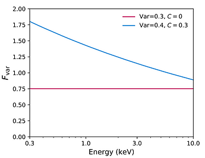
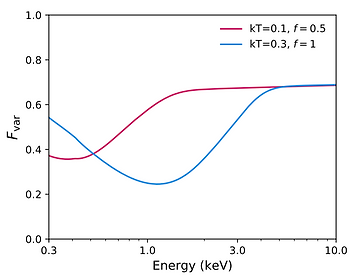
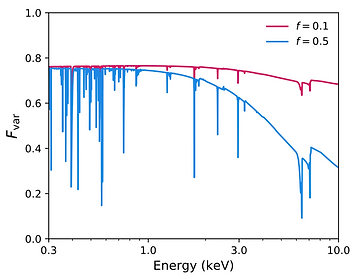
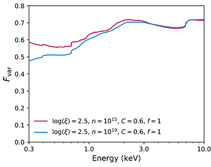
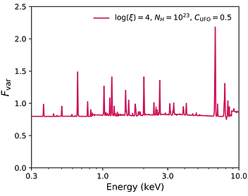
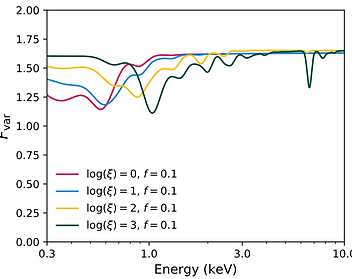
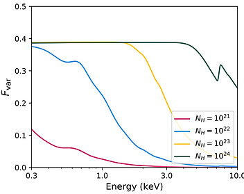

Modelling Variance Spectra
This page contains the xspec table models used for fitting the variance spectra of X-ray sources.
The models can be divided into two classes: additive models, which account for the primary processes driving the observed variability (such as variable absorption or changes in the coronal powerlaw emission), and multiplicative models, which modify the additive variability to account for secondary effects, such as damping from less variable emission processes (for example, distant reflection).
Models are calculated with the Monte-Carlo method described in Parker et al 2020. These models are simple, cover a limited parameter space, and rely on basic assumptions of variability. Use at your own risk! We strongly suggest reading the guidelines below, in full, before use.
General guidelines:
- Additive models have a normalization parameter. This parameter should generally be fixed to 1, otherwise the variance parameters are meaningless. However, if you do not care about the units of the normalisation/variance, it may be faster in some cases to fix the variance and fit the normalisation, as this does not require interpolation in the table model.
- No Galactic absorption is required, or any other constant multiplicative component.
- Do not use these models with count spectra. That’s not what they’re for.
- Because the models are relatively unsophisticated compared to conventional X-ray models, we recommend adding a small 1-2% systematic error. This is probably not necessary for low quality RMS spectra, or for very simple (i.e. powerlaw) spectra.
- Note that some versions of xspec have a bug when adding systematic error that may cause them to not fit. This can be avoided by running an initial fit without systematic error, before adding it in and re-fitting.
- When you use these models, please cite the relevant papers.
New models:
New models will be added as we generate them. If you need a specific model that we do not provide, please get in touch.
Variance Spectra in XSPEC:
These models all require a pre-calculated variance spectrum to be loaded into XSPEC. The procedure for this is fairly simple, once you have a variance spectrum (see e.g. Vaughan et al., 2003, for an explanation of how to calculate one). Once you have a variance spectrum, the simplest way to load it into XSPEC is using the flx2xsp/ftflx2xsp tool, which converts a text file into an XSPEC compatible .pha file and a unit diagonal response matrix.
Note that in general standard response matrices are not appropriate for variance spectra, as the variance is not equivalent to counts and will not redistribute in the same way. In most cases an energy-dependent Gaussian smoothing (using the gsmooth model in XSPEC) will give a good approximation of the energy resolution of the detector, and most other effects are normalised out when calculating an Fvar spectrum.
Michael Parker
X-ray Astronomer
Powerlaw variability

The Fvar_pow.fits table model (Parker et al., 2020). This model approximates the variance of a powerlaw continuum varying in log(flux), with a correlation between the photon index of the powerlaw and the log(flux).
Note that there is a bug in the current version of this model, where the parameter labelled var refers to standard deviation instead of variance. This will be fixed in a future update.
Parameters:
- Var - The variance of the logarithm of the powerlaw flux, from 0.5-10 keV. Note that this will not correspond to the observed Fvar statistic, as this is calculated from the linear variance.
- Cor - The correlation between the powerlaw index and the log flux, defined as Γ = 2 + cor*( log(F)/-12 ), where F is the instantaneous flux and -12 is the average log flux, in ergs/cm^2/s^1.
Black body damping

The Fvar_bbdamp.fits table model (Parker et al., 2020). This model accounts for the reduction in observed variance caused by a constant black body component.
This was conceived as a phenomenological model for the soft excess in AGN, but should be valid for other purposes.
Parameters:
- kT - the temperature of the black body in keV.
- frac - the ratio of the 0.5-10 keV flux of the black body to the average log powerlaw flux. Note that this may not be the same as inferred spectrally, as the time averaged count spectrum is a linear average.
Distant reflection

The Fvar_xildamp.fits table model (Parker et al., 2020). This model accounts for the reduction in observed variance caused by a constant unblurred reflection component.
This model is based on the Xillver reflection model (Garcia et al., 2013). The ionization is fixed at log(xi)=1, the photon index at 2, and the iron abundance at solar.
Parameters:
- frac - the ratio of the 0.5-10 keV flux of the reflection to the average log powerlaw flux. Note that this may not be the same as inferred spectrally, as the time averaged count spectrum is a linear average.
Relativistic reflection

The Fvar_refdamp.fits table model (Parker et al., 2020, Zaidouni et al., in prep). This model accounts for the reduction in observed variance caused by a relativistic reflection component.
This model is based on the Relxill relativistic reflection model (Garcia et al., 2014). In this version, most parameters are fixed at the representative literature values for IRAS 13224-3809. A more general version will be released soon.
Parameters:
- density - the log density of the accretion disk, in cm^-3.
- corr - the correlation between reflected emission and direct emission. 0 gives constant reflection, 1 gives reflection 1:1 correlated with the powerlaw.
- frac - the ratio of the 0.5-10 keV flux of the reflection to the average log powerlaw flux. Note that this may not be the same as inferred spectrally, as the time averaged count spectrum is a linear average. Note that in many cases this will be degenerate with the corr parameter, as the main effect of both is to scale the strength of the reflection damping.
- xi - the log ionization of the disk, in erg cm s^-1.
Ultra-fast outflow

The Fvar_ufo.fits table model (Parker et al., 2020, Härer et al., 2021). This model accounts for the enhancement in observed variance caused by a highly ionised absorption that responds to the X-ray flux.
The basic model was implemented in Parker et al., 2020, then expanded to allow for velocity broadening in Härer et al., 2021.
This model is based on the Xabs ionised absorption model (Steenbrugge et al., 2003).
Parameters:
- logxi - the log ionisation of the absorbing material, in erg cm s^-1.
- nH - the column density of the absorbing material, in 10^24 cm^-2.
- xicor - the correlation between log ionization and log continuum flux, responsible for the enhanced variability. For 0, no correlation is present and the absorption spectrum does not vary.
- vcor - the correlation between the absorption blueshift and the continuum flux, which acts to broaden the lines. Note that this is very degenerate with the degree of intrinsic velocity broadening.
Photoionised Emission

The Fvar_pidamp_1.fits table model (Parker et al., submitted). This model accounts for the drop in variance caused by constant photoionised emission.
This model is based on the Spex photoionisation model Pion (Miller et al., 2015, Mehdipour et al., 2016).
Parameters:
- frac - the ratio of the 0.5-10 keV flux of the reflection to the average log powerlaw flux. Note that this may not be the same as inferred spectrally, as the time averaged count spectrum is a linear average. Typically, this parameter will be significantly higher than expected from the count spectrum, particularly for very variable sources.
- xi - the log ionization of the disk, in erg cm s^-1.
Partial-covering absorption

The Fvar_pcov_1.1.fits table model (Parker et al., 2021). This model describes the variance caused by a photoionised absorber changing in covering fraction around a mean value.
This model is based on the Spex photoionisation model Xabs (Steenbrugge et al., 2003).
Parameters:
- nH - the column density of the absorbing material, in 10^24 cm^-2.
- fcov - the mean covering fraction of the absorber. Note that this will not necessarily be the same as that found from count spectra, as count spectra are weighted towards lower covering fraction/higher flux.
- fcov_sig - the standard deviation in covering fraction.
- nh_cor - the correlation between column density and covering fraction.
- xi - the log ionisation of the absorbing material, in erg cm s^-1.